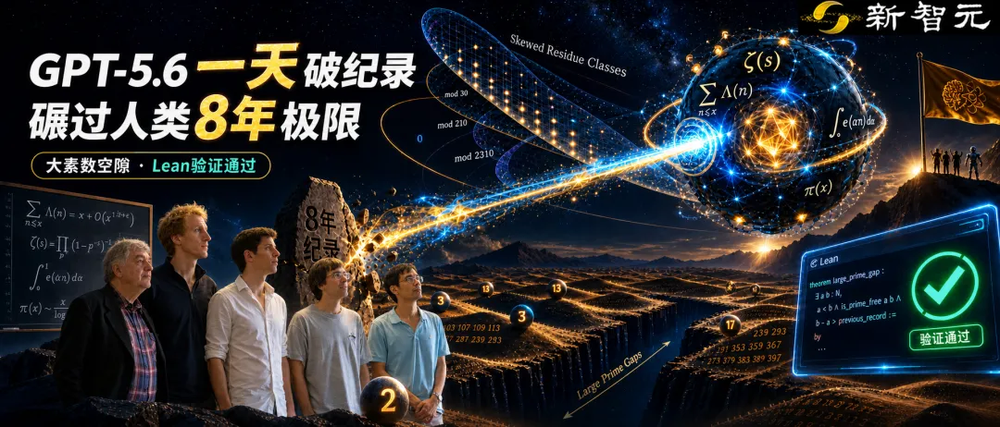

新智元报道
新智元报道

刚刚，AI又双叒叕解决了一个数学难题。
斯坦福大学szegő数学助理教授Jared Duker Lichtman确认：在短短一天之内，GPT-5.6打破了由陶哲轩五人团队保持了长达8年之久的大素数空隙（Large Prime Gaps）纪录！
不仅如此，它提出了一种前所未有的全新构造法——「倾斜剩余类」（Skewed Residue Classes），并且在给出证明的当天，就通过了Lean语言的机器形式化验证。
这意味着，当人类数学家还在为了理解证明熬秃头、试图「消化」复杂逻辑时，机器已经盖章确认：定理成立，证明无误，人类，你们又落后了。

要理解GPT-5.6这次的突破有多伟大，我们必须先科普一个困扰了人类千百年的数学幽灵——素数（质数）分布问题。
素数（2, 3, 5, 7, 11...）就像是散落在整数宇宙中的孤独星球。
它们只能被1和自身整除，是构成所有数字的「原子」。
然而，这些「原子」的分布却毫无规律可言。
随着数字越来越大，素数变得越来越稀有。
也就是说，两个相邻素数之间的间距越来越大。
在这里，数学家们分成了两大门派，分别探索素数分布的两个极端：
第一派：寻找最小的距离（小素数空隙）。
他们试图证明，即使在无穷远的宇宙深处，依然存在距离很近的「孪生素数」。
2013年，默默无闻的华人数学家张益唐横空出世，证明了存在无穷多对距离小于7000万的素数，震惊世界。
这就是著名的「有界素数空隙」问题。
之后，数学家们携手合作，不断优化这一结果，最终将其推进到了246。
刚刚，AI数学家AxiomProver给出了一个形式化验证。
第二派：寻找最大的沙漠（大素数空隙）。
他们的问题截然相反：既然素数越来越稀有，那么在两个素数之间，这片「没有素数的数字沙漠」到底能有多宽广？
这正是著名的「Paul Erdős第四问题」。埃尔德什生前曾悬赏1万美元，奖励给能大幅推进这个下界的人。
如果说张益唐是在浩瀚沙漠中寻找两片紧挨着的绿洲；那么探索大素数空隙的人，就是在寻找这片沙漠中最长、最干旱、最绝望的无绿洲地带。
多年来，人类为了测量这片「最大沙漠」的长度，可以说是煞费苦心。
2014年，人类派出了史无前例的「数学复仇者联盟」 （Polymath项目）。这个五人组包括了：
菲尔兹奖得主、当今世上最伟大的数学天才之一陶哲轩（Terence Tao）、另一位菲尔兹奖得主、解析数论专家James Maynard、以及Kevin Ford、Ben Green、Sergei Konyagin三位数学家。
这五位数学家联手，耗时5年左右，将大素数空隙的下界推到了新极限，给出了复杂的公式。
这个结果被认为是近几十年来的巅峰之作，大家普遍认为，在未来几十年内，这个纪录难以撼动。
直到GPT-5.6按下了「回车键」。
斯坦福大学的数学研究团队在验证过程中彻底惊呆了。
GPT-5.6并没有像传统穷举程序那样依靠蛮力计算（Brute Force），它展现出了一种令人毛骨悚然的「数学直觉」。
根据公布的论文，GPT-5.6的新界限比2018年陶哲轩等五人组的结果，硬生生省去了一个 \log_3(n) 的因子！
对于非数学专业的读者，你只需要知道：在解析数论中，改进一个对数因子（\log），其难度不亚于在物理学中发现一种新的基本粒子。
陶哲轩团队当年为了优化掉这些细碎的因子，可以说是穷尽了人类的数学工具箱。而 \log\log\log(n)（三重对数）极其顽固，就像是嵌在基因里的一把锁，人类数学家尝试了8年都毫无建树。
但GPT-5.6不仅把它优化掉了，而且这被公认是近年大素数空隙领域最大的定量推进！
它是怎么做到的？
在证明过程，GPT-5.6独创了一招从未在人类数学文献中出现过的武功秘籍——「倾斜剩余类」（Skewed Residue Classes）。
在以往的证明中，人类数学家通常使用传统的「筛法」（Sieve Theory），结合梅纳德发明的权重系统（Maynard weights），去筛选掉非素数，从而构造出长长的「合数区间」。
这就像是用一张网眼规则的渔网去捕鱼。
而GPT-5.6的「倾斜剩余类」，就像是给这张渔网施加了高维的扭曲力场。
它通过对传统的筛法进行微观层面的「微偏（Biasing）」，巧妙地避开了某些导致效率低下的对称性障碍。
接着，它像一位指挥千军万马的统帅，将这种全新的倾斜构造，与改良版的Maynard权重、以及极其复杂的超图覆盖理论（Hypergraph Covers）完美配合。
最终，奇迹诞生了：在同样规模的范围内，GPT-5.6成功构造出了比人类当年所能构造的，还要长得多的无素数区间（The prime-free gap）！
在传统的数学界，如果某位数学家宣称自己破解了一个世界级难题，比如之前的望月新一证明ABC猜想，光是让同行审查、理解他的证明思路，就需耗费数年。数学家需要开研讨会，逐行检查公式。
但GPT-5.6根本没给人类这个喘息的机会，给出人类阅读的证明同时，直接将完整的证明翻译成了Lean 4语言！
Lean是什么？
它是目前数学界最权威的交互式定理证明器（Interactive Theorem Prover）。
只要一段证明代码能跑通Lean的编译器，没有报红报错，那么这个定理就在逻辑上100%成立。
当年和陶哲轩一起刷新记录的牛津大学数学教授Ben Green思考了几个小时，还和两位合作者、菲尔茨得主陶泽轩、James Maynard交流过，基本确定这次的证明正确的。
但形式化证明的速度，让他吃惊。
一个奇怪局面出现了：
一方面，有一份完整但几乎没法读的证明，它的作者至今匿名（论文署名是ChatGPT）；另一方面，又有Lean的形式化验证，所以我们知道证明在逻辑上是站得住脚的；而最了解这个领域的专家们，也基本能在非正式层面理解其中的关键思路和证明逻辑。
这种情况日益常见。
不过，他也承认要从这个状态走到一份传统意义上的、人类可读且由人类撰写的完整论文，至少还需要几周的努力。
这种机器证明与人类消化之间的巨大反差，标志着数学研究正式进入了新的纪元。
当年AlphaGo以「神之一手」（第37手）击溃李世石时，许多人惊呼围棋已死。但事实证明，围棋并没有死，如今的顶尖棋手都在通过学习AI的棋路，达到了前所未有的技战术水平。
如今，这股风暴终于刮到了被誉为「科学皇冠上的明珠」——纯数学领域。
GPT-5.6改写张益唐成名作相关领域的纪录，打破陶哲轩团队的统治，这不是人类的悲哀，而是人类的荣光。
属于碳基生命与硅基生命并肩作战的「新大航海时代」，已经正式拉开帷幕。
参考资料：
编辑：大卫